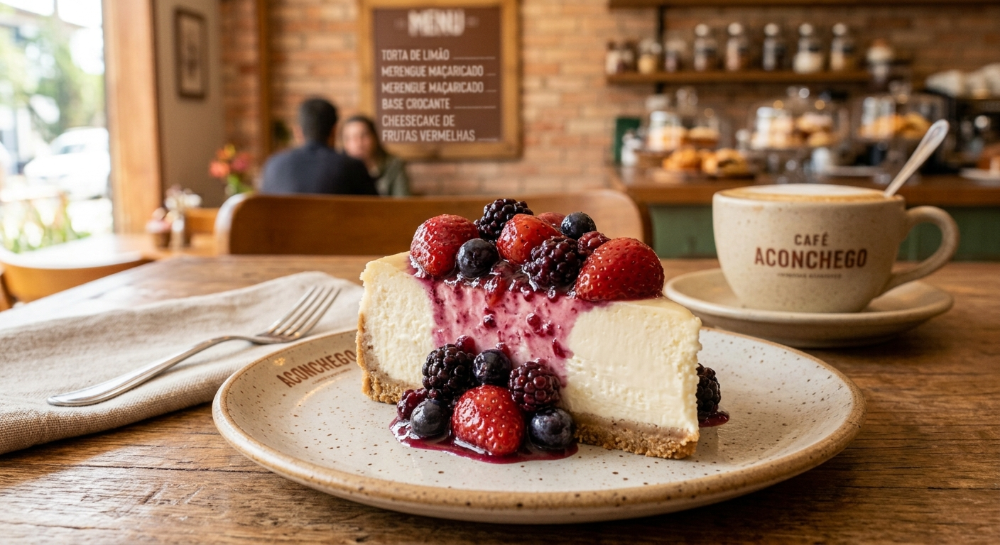
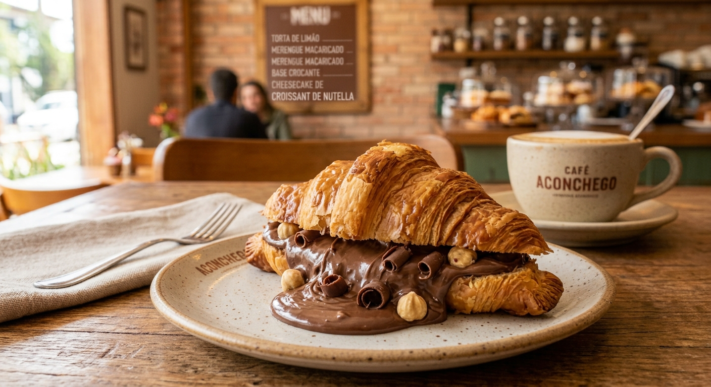
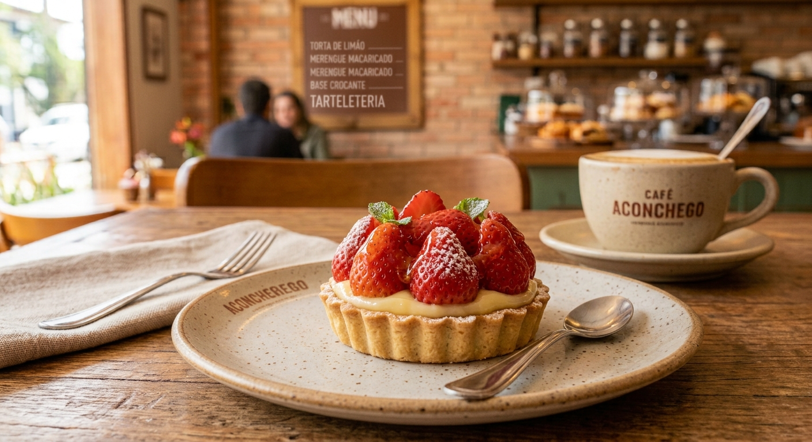
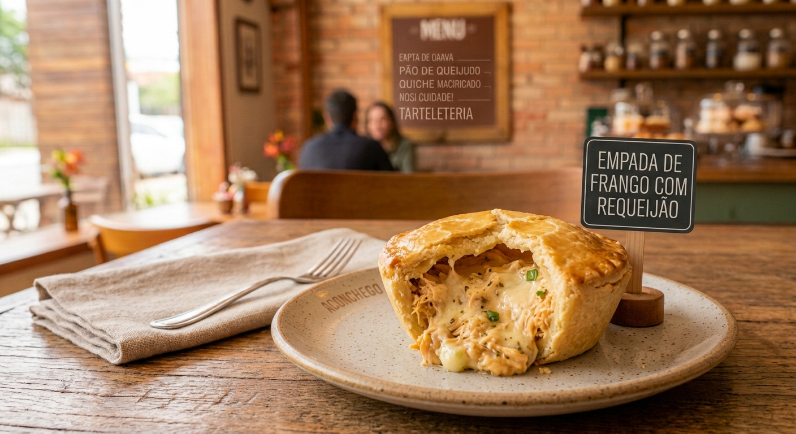
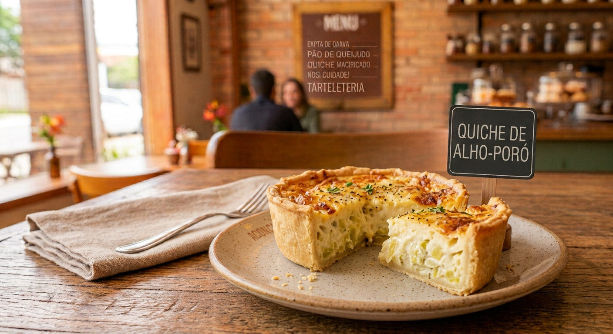
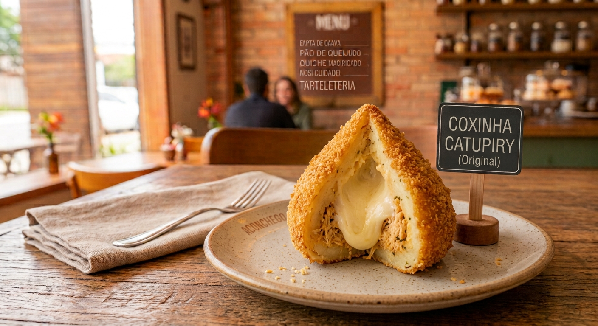

1. Bolo de Chocolate Supremo

Massa molhadinha de cacau com recheio de brigadeiro gourmet e cobertura de ganache.
Massa molhadinha de cacau com recheio de brigadeiro gourmet e cobertura de ganache.

Base crocante de biscoito com creme suave de limão e cobertura de merengue maçaricado.

Massa leve à base de cream cheese com calda artesanal de morango, amora e mirtilo.

Massa folhada bem amanteigada e crocante, recheada com bastante creme de avelã e cacau.

Massa sablée recheada com creme de confeiteiro e morangos frescos selecionados.

Massa folhada artesanal, recheada com queijo derretido e presunto cozido de alta qualidade.

Massa podre tradicional que derrete na boca, recheada com frango desfiado temperado e requeijão cremoso.

Feito com polvilho artesanal e queijo canastra meia cura, crocante por fora e macio por dentro.

Massa leve e crocante com recheio cremoso à base de queijo gruyère e alho-poró refogado na manteiga.

Massa de batata leve, empanada na farinha panko, recheada com frango bem temperado e catupiry original.